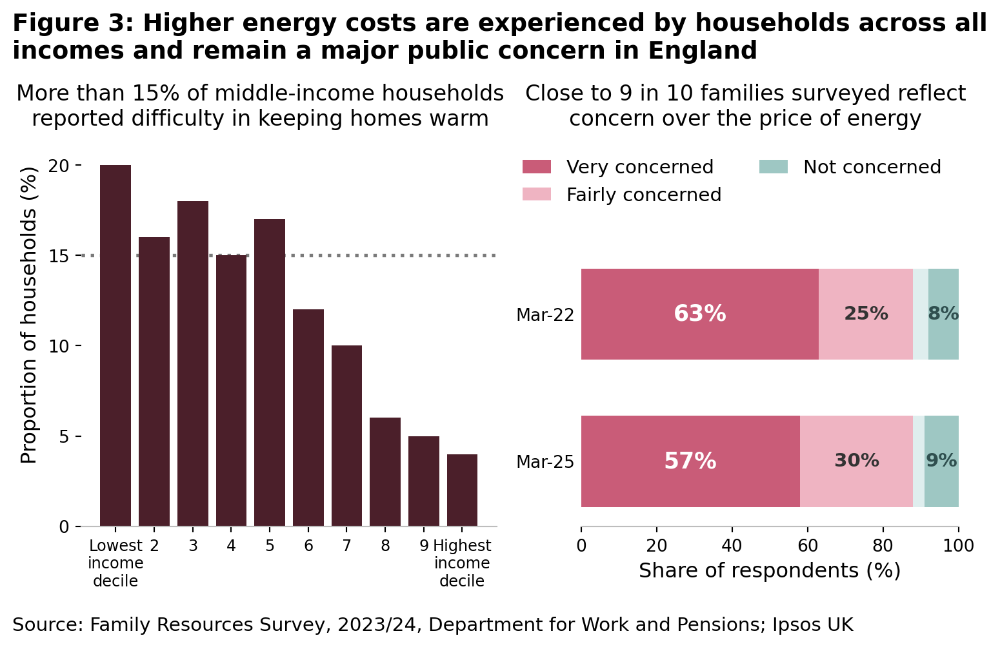
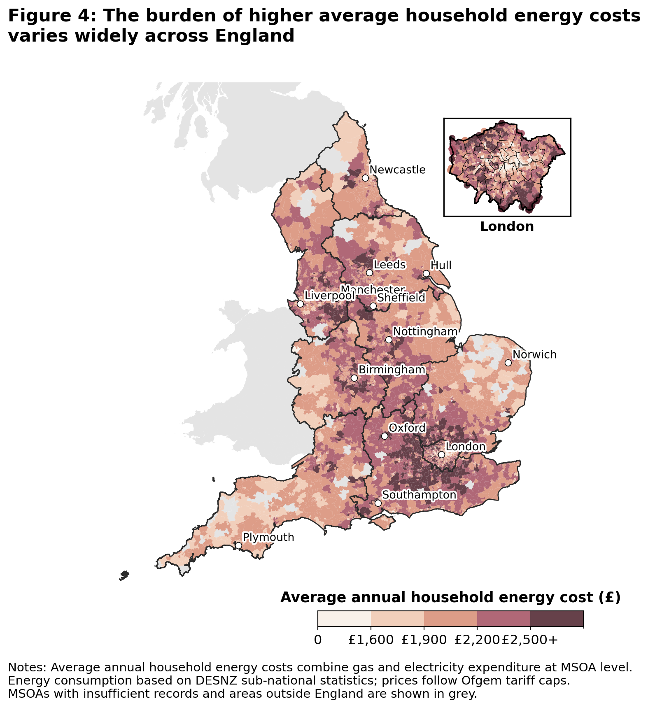
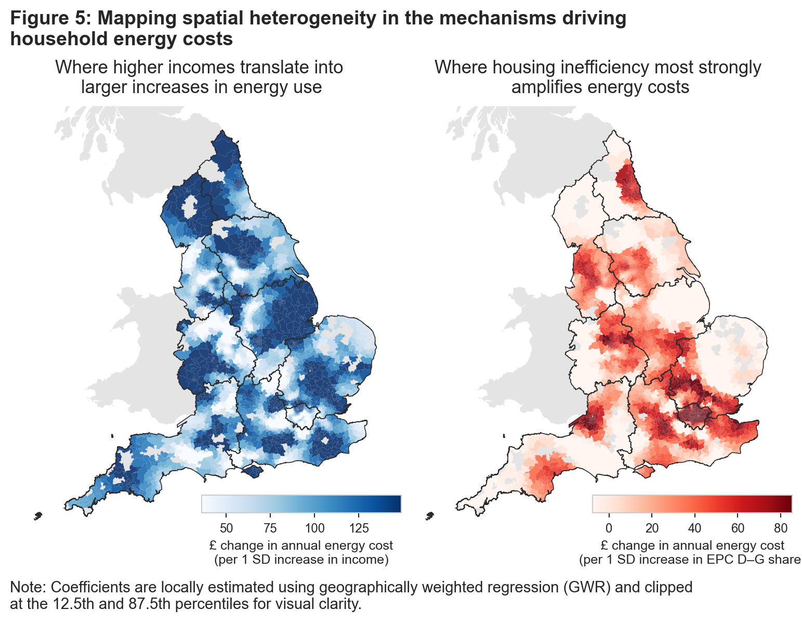
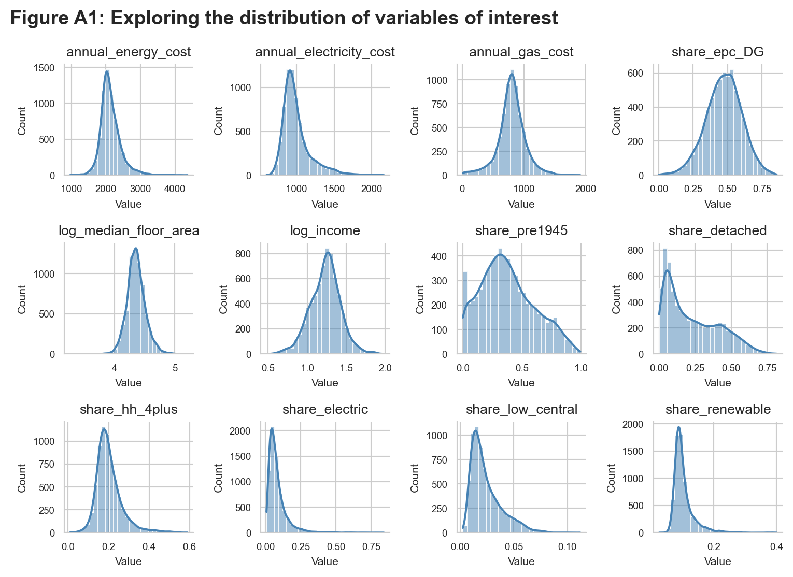
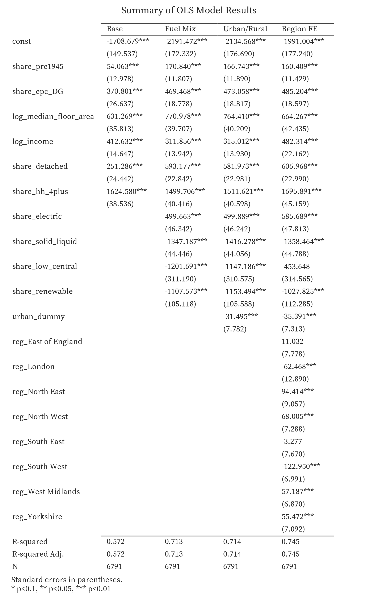

CASA0007 Assessment Submission
England’s energy crisis is no longer about volatility - it’s about persistence and inequality.
Date: 12 Jan 2026
While headline energy prices have eased since 2022, household energy bills in England remain above pre-crisis levels. What has emerged is not a short-lived shock, but a sustained financial burden. When high energy costs persist, they begin to shape household finances and regional inequalities. Understanding who is most exposed, and why, is central to designing effective energy policy.
From shock to persistence
The sharp rise in energy cost in 2022 was driven by global wholesale gas prices and exacerbated by geopolitical shocks1. Since then, wholesale prices have moderated. The government’s Energy Price Guarantee (EPG) temporarily also capped household exposure at the height of the crisis2.
Yet, this has not returned household bills to pre-2021 norms. Latest estimates show that the energy price cap remains around £600 (45%) higher than before the crisis (Figure 1). Moreover, the cap is projected to rise again in the coming quarters3. While volatility has eased, prices have settled at historically high levels.
This persistence places growing pressure on households. Average levels of energy debt and the number of households in arrears have risen sharply since 2021 (Figure 2), suggesting that many have been unable to absorb higher costs through behavioural adjustments or savings alone (Ofgem, 2025a).

While the impact is most acute for lower-income households, higher energy costs are also squeezing the broad-middle. At least 15% of middle-income households now report struggling to heat their homes adequately (Tilly Cook, 2025). It is therefore unsurprising that energy costs remain at the top of public concerns. A March 2025 IPSOS UK survey4 found that close to nine in ten respondents (88%) were worried about the price households pay for energy — a figure unchanged since the height of the crisis (Figure 3).

Exposure to high energy costs is uneven across England
Although household energy prices are nationally regulated, the costs households face are far from uniform. Average bills depend not only on prices, but on how much energy households consume and how efficiently their homes convert energy into power.
As a result, some households face persistently high energy costs because they live in larger, older or less efficient homes, rely on more expensive heating systems, or have limited scope to reduce consumption. These differences reflect structural characteristics of housing rather than short-term behavioural choices alone.
Figure 4 illustrates this uneven exposure by mapping average household energy costs across England. Higher costs are concentrated across much of the North and Midlands, and parts of the South Coast, while lower average costs are more common in parts of the Southwest and East. There is also substantial variation within regions and cities.
This raises a key question: if prices are broadly similar, why does its impact differ so sharply, and what does that imply for equitable energy policy?

What drives differences in household energy costs?
To explore these drivers, we estimate a multivariate model that relates average household energy costs to building age and energy efficiency, dwelling characteristics, household composition and heating infrastructure, while controlling for regional differences. We aim to identify structural factors that are most strongly associated with high energy costs.
Results are summarised in Table 1. Three findings stand out.
- Housing energy inefficiency is a central driver of high costs. Areas with a higher share of energy-inefficient homes (EPC bands D-G), face significantly higher annual energy costs, even after accounting for income and other housing characteristics. Poor insulation and inefficient heating systems amplify the associated increase of high prices, meaning that households in these homes pay more regardless of their income position.
- Housing form and household composition matter. Older and larger dwellings, detached housing and areas with more large households all face higher energy costs, reflecting greater baseline energy needs. These factors help explain why some higher-income areas still experience high absolute cost: higher incomes often coincide with larger, more energy-intensive homes.
- Income shapes households’ capacity to absorb energy costs rather than costs alone. Higher incomes are associated with higher energy consumption and higher costs, but they also provide greater financial resilience. In contrast, areas characterised by lower incomes have far less scope to accommodate rising costs, particularly where poor housing efficiency or heating systems push cost upwards.
| Structural factor (MSOA-level) | Modelled change in annual energy cost (per HH) |
|---|---|
| +10pp share of households with 4+ people | ≈ +£170 |
| +10% increase in median floor area of homes | ≈ +£65-75 |
| +10pp share of EPC D–G homes | ≈ +£50–65 |
| +10pp share of detached homes | ≈+£50-60 |
| +10% increase in household income | ≈+£50-55 |
| +10pp share of pre-1945 housing | ≈+£15-20 |
Note: Effects are indicative averages and reflect associations rather than causal impact.
These findings explain why financial pressure may extend beyond the lowest-income groups. A substantial share of middle-income households report struggling with energy bills not solely because they consume unusually large amounts of energy, but because structural features expose them to persistently high costs. In equity terms, households with similar incomes can face different energy pressures depending on where and how they live.
Why place still matters
Even after accounting for income, housing characteristics and heating systems, some spatial variation in energy costs remains. This variation persists after controlling for regional differences, indicating finer localised differences such as housing stock composition, settlement patterns that shape how households experience energy prices.
Using a geographically weighted regression, Figure 5 shows how the influence of income and energy efficiency vary across England. In some areas, higher incomes are closely associated with higher energy costs, reflecting consumption linked to larger or more energy-intensive homes. In others, income plays a much weaker role. In contrast, the cost penalty associated with poor housing efficiency is uneven, with inefficient homes driving higher cost in some places but less so in others.

Towards Equitable Policy: From Relief to Resilience
These findings spur the following policy considerations:
Moving Beyond Blunt Instruments: While universal subsidies are politically expedient and provide immediate relief, they are blunt instruments that fail to address structural drivers. These measures treat symptoms, often subsidizing consumption for those who do not need it while failing to provide deep support for those in the most inefficient homes.
Efficiency as Long-Term Protection: Sustained investment in housing energy efficiency, such as insulation and heating upgrades, remains the most effective long-term defense against structurally high prices. This is especially critical in areas where poor housing stock imposes “efficiency penalties” on residents regardless of their income.
Emphasis on Place-Based Targeting: The spatial heterogeneity identified in this study suggests that national income thresholds alone are insufficient. To ensure support reaches those most exposed, policy must become “place-sensitive,” accounting for local housing conditions and structural vulnerabilities that income data alone might overlook.
As energy prices settle at a higher level, the challenge for policymakers is no longer how to smooth volatility, but how to prevent nationally regulated prices from deepening inequality, and to shape an energy system that is both efficient and equitable.
Technical Appendix
1. Study Objective
This study examines the structural drivers of domestic energy costs (electricity and gas) at the Middle Layer Super Output Area (MSOA) level in England. First, it identifies how housing characteristics, household composition, and heating systems are associated with variation in average annual household energy costs. Second, it assesses whether these relationships exhibit spatial dependence, indicating that some areas are systematically exposed to higher energy costs even after observable characteristics are controlled for.
The analysis is descriptive and explanatory rather than causal. By focusing on small-area averages, it highlights how nationally regulated energy prices translate into uneven local cost pressures through differences in housing stock, energy efficiency and household structure. The emphasis is on identifying structural sources of exposure and inequity, rather than estimating behavioural responses or causal treatment effects.
2. Data and Assumptions
2.1 Spatial unit analysis and data sources
MSOAs offer a balance between spatial resolution and data stability, avoiding the volatility associated with smaller geographies while preserving meaningful spatial variation. The table below summarizes variables retained in the preferred specification.
| Variable | Source | Methodology & assumptions |
|---|---|---|
| Annual electricity consumption (kWh) | Department for Energy Security and Net Zero (2025a) | MSOA mean domestic electricity consumption per meter |
| Annual gas consumption (kWh) | Department for Energy Security and Net Zero (2025a) | MSOA mean domestic gas consumption per meter |
| Electricity & gas prices | Ofgem (2024) | National average price cap values (incl. VAT), Jan–Mar 2024 |
| Annual energy cost (dependent variable) | Author | Electricity + gas consumption × unit prices + standing charges |
| Share of pre-1945 housing | Valuation Office Agency (2021) | Proxy for legacy housing inefficiency |
| Share of EPC D–G dwellings | EPC Register, DLUHC (2025) | Proxy for poor energy efficiency (2019–2025) |
| Median floor area (log) | EPC Register, DLUHC (2025) | Logged to address skewness |
| Median household income (log) | Office for National Statistics (2024) | Logged median household income at MSOA-level |
| Share of detached dwellings | Office for National Statistics (2022a) | Captures structural heat loss |
| Share of households with 4+ occupants | Office for National Statistics (2022b) | Captures household size |
| Heating type shares | Office for National Statistics (2022c) | Electric-only, solid/liquid fuels, renewable networks |
| Urban–rural indicator | Office for National Statistics (2022e) | Binary classification |
| Region | Office for National Statistics (2022d) | Region fixed effects |
We assume that energy prices are nationally regulated and spatially uniform, reflecting Ofgem price caps. Spatial variation in observed energy costs therefore arises from differences in consumption, housing efficiency and heating systems rather than local price-setting.
2.2 Exploratory analysis of data variables
Exploratory analysis (Figure A1) highlights substantial right-skewness in electricity costs and total energy costs, driven by a subset of MSOAs with high electricity reliance and larger dwellings. As household income is also right-skewed, log-transformation is applied. Heating system variables are unevenly distributed across space but are retained, as they represent structurally distinct energy systems with implications for electricity demand and exposure to high prices.

Exploratory plots of the dependent variable against key predictors (Figure A2) inform variable selection and specification.

3. Methodology and Model Specification
3.1 Construction of energy costs
Annual household energy costs are constructed by combining MSOA-level average electricity and gas consumption with national unit prices and standing charges. Electricity and gas costs are calculated separately and summed to obtain total average annual energy cost per household.
3.2 Regression framework
Ordinary Least Squares (OLS) regression is used as the primary modelling framework, due to its transparency and interpretability. Coefficients are interpreted as marginal associations with average annual household energy costs. All models are estimated with heteroscedasticity-robust (HC1) standard errors.
The preferred specification is:
\[ \begin{aligned} \text{EnergyCost}_i = {} & \alpha + \beta_1 \,\text{Pre1945}_i + \beta_2 \,\text{EPC}_{D\text{--}G,i} + \beta_3 \log(\text{FloorArea}_i) \\ & + \beta_4 \log(\text{Income}_i) + \beta_5 \,\text{Detached}_i + \beta_6 \,\text{HH}_{4+,i} \\ & + \beta_7 \,\text{FuelMix}_i + \beta_8 \,\text{Urban}_i + \gamma_r + \varepsilon_i \end{aligned} \]
where i indexes MSOAs and γᵣ denotes region fixed effects.
Variables capture four structural dimensions:
Housing age and efficiency (share pre-1945, share EPC D–G)
Housing scale and form (log floor area, share detached)
Household composition and income (log income, share 4+ households)
Heating infrastructure (fuel mix indicators)
Multicollinearity is assessed using variance inflation factors and remains within accepted thresholds.
4. Regression Findings
Across all specifications, structural housing characteristics and household composition emerge as the primary drivers of variation in annual household energy costs.
A higher share of energy-inefficient dwellings (EPC D–G) and pre-1945 housing is consistently associated with higher energy costs, even after controlling for income and dwelling size. These effects remain stable across all model specifications, indicating that housing efficiency and age exert an independent influence on energy expenditure.
Dwelling size and housing type are also strongly associated with energy costs. Larger median floor areas and a higher share of detached housing are linked to higher expenditure, reflecting greater baseline energy demand.
Household composition also plays an important role. MSOAs with a higher share of households containing four or more persons exhibit substantially higher energy costs across all models, with this variable showing the largest coefficients throughout.
The inclusion of fuel mix variables materially improves explanatory power, with the adjusted \(R^2\) increasing from \(0.572\) to \(0.713\). Electric-only heating is associated with significantly higher energy costs, while solid and liquid fuels and renewables are associated with lower average expenditure.
Adding region fixed effects further improves model fit (final adjusted \(R^2\) = \(0.745\)), likely capturing residual climatic variation and regional housing patterns, without materially altering the main coefficient estimates.

Residual diagnostics (Figure A3) indicate satisfactory linearity and variance homogeneity, with mild right-skewness. Checks reveal a small number of high-cost MSOAs that tend to have larger dwellings and higher reliance on electricity.

| VIF Summary | VIF | Plot_label | |
|---|---|---|---|
| 0 | reg_North East | 1.686154 | Var_1 |
| 1 | share_epc_DG | 1.902158 | Var_2 |
| 2 | share_hh_4plus | 1.927551 | Var_3 |
| 3 | reg_Yorkshire | 2.067431 | Var_4 |
| 4 | reg_South West | 2.071966 | Var_5 |
| 5 | reg_West Midlands | 2.102305 | Var_6 |
| 6 | share_pre1945 | 2.106134 | Var_7 |
| 7 | urban_dummy | 2.147526 | Var_8 |
| 8 | share_electric | 2.224277 | Var_9 |
| 9 | reg_East of England | 2.245763 | Var_10 |
| 10 | share_renewable | 2.277739 | Var_11 |
| 11 | reg_North West | 2.469844 | Var_12 |
| 12 | reg_South East | 2.849354 | Var_13 |
| 13 | share_solid_liquid | 3.225414 | Var_14 |
| 14 | share_detached | 3.631050 | Var_15 |
| 15 | log_median_floor_area | 3.815178 | Var_16 |
| 16 | log_income | 4.066691 | Var_17 |
| 17 | share_low_central | 4.577141 | Var_18 |
| 18 | reg_London | 5.265254 | Var_19 |
5. Unpacking spatial dependence via Spatial Error Model (SEM) and Geographically Weighted Regression (GWR)
Global Moran’s I tests on OLS residuals show positive spatial autocorrelation (\(I = 0.43\)), indicating that neighbouring MSOAs share some unobserved characteristics influencing energy costs.
Moran's I value = 0.43 with p = 0.001Spatial Error Model (SEM)
To account for this, a Spatial Error Model (SEM) was estimated using maximum likelihood. The SEM identifies strong spatial correlation in the error term \((λ ≈ 0.73)\), consistent with possible omitted spatially structured factors such as housing typologies, retrofit histories or local infrastructure.
REGRESSION RESULTS
------------------
SUMMARY OF OUTPUT: ML SPATIAL ERROR (METHOD = full)
---------------------------------------------------
Data set : unknown
Weights matrix : unknown
Dependent Variable :annual_energy_cost Number of Observations: 6791
Mean dependent var : 2130.8608 Number of Variables : 11
S.D. dependent var : 294.3179 Degrees of Freedom : 6780
Pseudo R-squared : 0.6920
Log likelihood : -42323.4933
Sigma-square ML : 13329.1753 Akaike info criterion : 84668.987
S.E of regression : 115.4520 Schwarz criterion : 84744.043
------------------------------------------------------------------------------------
Variable Coefficient Std.Error z-Statistic Probability
------------------------------------------------------------------------------------
CONSTANT -1796.30377 77.33022 -23.22900 0.00000
share_pre1945 194.45965 10.24099 18.98837 0.00000
share_epc_DG 408.82274 16.59709 24.63219 0.00000
log_median_floor_area 732.10715 19.44254 37.65490 0.00000
log_income 175.13365 17.99068 9.73469 0.00000
share_detached 704.82340 17.02771 41.39273 0.00000
share_hh_4plus 1031.84763 42.01742 24.55761 0.00000
share_electric 550.09246 36.92569 14.89728 0.00000
share_solid_liquid -1108.54704 33.07389 -33.51729 0.00000
share_low_central -747.51343 256.90902 -2.90964 0.00362
share_renewable -1183.19779 75.24002 -15.72564 0.00000
lambda 0.73423 0.01009 72.76398 0.00000
------------------------------------------------------------------------------------
Warning: Variable(s) ['const'] removed for being constant.
================================ END OF REPORT =====================================Notwithstanding, the findings are robust: coefficient signs and magnitudes remain consistent with OLS estimates. This suggests that while spatially clustered unobserved factors influence energy cost exposure, core structural relationships are correctly specified.
Geographically Weighted Regression
To further explore spatial heterogeneity in coefficients, Geographically Weighted Regression (GWR) was employed to examine how the impact of income and housing efficiency vary spatially. An adaptive bandwidth was selected via AICc.
| Metric | Value | |
|---|---|---|
| 0 | Effective number of parameters (trace(S)) | 781.589 |
| 1 | Degrees of freedom (n − trace(S)) | 6009.411 |
| 2 | Sigma estimate | 11105.445 |
| 3 | Log-likelihood | -40850.569 |
| 4 | AIC | 83266.316 |
| 5 | AICc | 83470.474 |
| 6 | BIC | 88606.198 |
| 7 | R² | 0.887 |
| 8 | Adjusted R² | 0.872 |
| Variable | Coefficient | Std. dev. | Min | Mean | Max | |
|---|---|---|---|---|---|---|
| 0 | Intercept | 2207.98 | 220.54 | 750.35 | 2207.98 | 4028.94 |
| 1 | Share pre-1945 homes | 25.62 | 29.36 | -112.75 | 25.62 | 145.98 |
| 2 | Share EPC D–G homes | 41.45 | 49.02 | -86.38 | 41.45 | 247.65 |
| 3 | Log median floor area | 55.84 | 55.33 | -89.08 | 55.84 | 300.52 |
| 4 | Log income | 89.19 | 51.33 | -132.50 | 89.19 | 368.16 |
| 5 | Share detached homes | 148.40 | 192.09 | -973.50 | 148.40 | 1634.11 |
| 6 | Share households ≥4 persons | 69.08 | 45.90 | -123.66 | 69.08 | 229.57 |
Additional findings include:
Income-Driven Areas: Higher energy costs align with income, suggesting consumption-led demand.
Efficiency-Driven Areas: High EPC D–G coefficients indicate that poor housing quality drives costs regardless of household wealth.
While GWR reached an \(R^2\) of 0.88, the elevated fit likely reflects GWR’s inherent local overfitting and results serve an exploratory purpose rather than a formal refutation of the global model’s performance.
6. Reflections and Limitations
This analysis is subject to several limitations. As an ecological study, it cannot capture within-area household heterogeneity or behavioural responses such as under-heating. Data accuracy is also constrained by availability of EPC submissions which tend to be more sparse in rural areas, and retrofit history is not directly observed. Residual spatial clustering reflects genuine structural heterogeneity rather than model failure.
From an equity perspective, the results underline that exposure to high energy costs is shaped by place-specific housing conditions, not income alone. This reinforces the need for policy approaches that integrate housing efficiency and local context alongside income-based support.
References
Advani, A. et al. (2013) Household energy use in britain: A distributional analysis. Institute for Fiscal Studies. doi: 10.1920/re.ifs.2013.0085.
Bolton, P. (2025) “Gas and electricity prices during the ‘energy crisis’ and beyond.” Available at: https://commonslibrary.parliament.uk/research-briefings/cbp-9714/ (Accessed: December 29, 2025).
Cornwall Insights (2025) “Bills Remain Stable But New Forecast Signals Increases in April.” Available at: https://www.cornwall-insight.com/press-and-media/press-release/bills-remain-stable-but-new-forecast-signals-increases-in-april/ (Accessed: December 29, 2025).
Department for Energy Security and Net Zero (2025a) Electricity and gas consumption estimates at MSOA level. Available at: https://www.data.gov.uk/dataset/ed629618-7b69-465d-8e0a-0546b1809fc7/electricity_and_gas_consumption_at_middle_layer_super_output_area_mlsoa_and_intermediate_geography_z (Accessed: December 27, 2025).
Department for Energy Security and Net Zero (2025b) MSOA estimates of properties not connected to the gas network. Available at: https://www.gov.uk/government/statistics/msoa-estimates-of-households-not-connected-to-the-gas-network (Accessed: December 22, 2025).
Department for Energy Security and Net Zero (2025c) Subnational electricity and gas consumption summary report 2024. Available at: https://www.gov.uk/government/statistics/subnational-electricity-and-gas-consumption-summary-report-2024/subnational-electricity-and-gas-consumption-summary-report-2024--2 (Accessed: December 27, 2025).
DLUHC (2025) Energy Performance of Buildings Data England and Wales. Available at: https://epc.opendatacommunities.org/ (Accessed: December 27, 2025).
Ipsos (2025) Almost nine in ten britons are concerned about energy prices. Available at: https://www.ipsos.com/en-uk/almost-nine-ten-britons-are-concerned-about-energy-prices (Accessed: December 22, 2025).
Office for National Statistics (2022a) Census 2021: Accomodation type (TS044). Available at: https://www.ons.gov.uk/datasets/TS044/editions/2021/versions/4 (Accessed: December 27, 2025).
Office for National Statistics (2022b) Census 2021: Central heating (TS017). Available at: https://statistics.ukdataservice.ac.uk/dataset/ons_2021_demography_household_size (Accessed: December 27, 2025).
Office for National Statistics (2022c) Census 2021: Central heating (TS046). Available at: https://statistics.ukdataservice.ac.uk/dataset/england-and-wales-census-2021-ts046-central-heating (Accessed: December 27, 2025).
Office for National Statistics (2022d) Regions (December 2022) Boundaries EN BFE. Available at: https://geoportal.statistics.gov.uk/datasets/ons::regions-december-2022-boundaries-en-bfe/about (Accessed: December 27, 2025).
Office for National Statistics (2022e) Rural/urban classifications - Office for National Statistics. Available at: https://www.ons.gov.uk/methodology/geography/geographicalproducts/ruralurbanclassifications/2021ruralurbanclassification (Accessed: December 27, 2025).
Office for National Statistics (2024) Income estimates for small areas, england and wales.
Office for National Statistics (2025) Public opinions and social trends, great britain. Available at: https://www.ons.gov.uk/peoplepopulationandcommunity/wellbeing/bulletins/publicopinionsandsocialtrendsgreatbritain/june2025 (Accessed: December 16, 2025).
Ofgem (2024) New energy price cap level for january to march 2024. Available at: https://www.ofgem.gov.uk/news/new-energy-price-cap-level-january-march-2024-starts-today (Accessed: December 22, 2025).
Ofgem (2025a) Debt and arrears indicators. Available at: https://www.ofgem.gov.uk/data/debt-and-arrears-indicators (Accessed: December 27, 2025).
Ofgem (2025b) Energy price cap explained. Available at: https://www.ofgem.gov.uk/information-consumers/energy-advice-households/energy-price-cap-explained (Accessed: December 27, 2025).
Oshan, T. M. et al. (2019) “Mgwr: A python implementation of multiscale geographically weighted regression,” ISPRS International Journal of Geo-Information, 8(6), p. 269. doi: 10.3390/ijgi8060269.
Prime Minister’s Office (2022) Government announces energy price guarantee for families and businesses. Available at: https://www.gov.uk/government/news/government-announces-energy-price-guarantee-for-families-and-businesses-while-urgently-taking-action-to-reform-broken-energy-market (Accessed: December 22, 2025).
Robinson, E. (2025) Energy bills and debt are rising yet again – here are three things that would help vulnerable households, The Conversation. doi: 10.64628/AB.9r55r7hns.
Tilly Cook, A. W. (2025) “Energy affordability: How to reduce bills for majority of households Joseph Rowntree Foundation.” Available at: https://www.jrf.org.uk/cost-of-living/energy-affordability-how-to-reduce-bills-for-majority-of-households (Accessed: December 29, 2025).
Valuation Office Agency (2021) Dwelling Ages and Prices - Geographic Data Service. Available at: https://data.geods.ac.uk/dataset/dwelling-ages-and-prices (Accessed: December 27, 2025).
Footnotes
Russia-Ukraine War (Bolton, 2025)↩︎
In Sep 22, then-Prime Minister Elizabeth Truss implemented the Energy Price Guarantee (EPG) to cap the typical UK household energy bill at £2,500 a year for the next two years (Prime Minister’s Office, 2022).↩︎
Cornwall insights forecasts that the price cap for energy bills is expected to rise by 3.2% in 2Q26, to account for increases in network costs for electricity (Cornwall Insights, 2025).↩︎
https://www.ipsos.com/en-uk/almost-nine-ten-britons-are-concerned-about-energy-prices↩︎